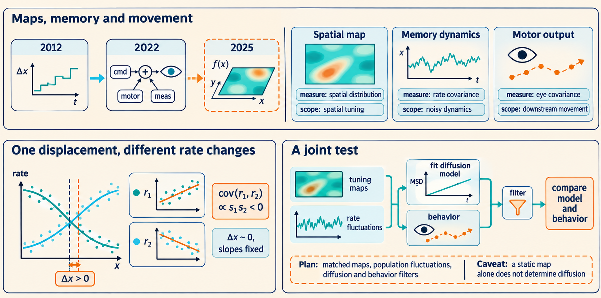

13 Spatial maps and memory dynamics need separate tests
The three papers address different links between nerve-cell activity and behavior: retaining a value, producing eye movement, and representing location. This chapter compares what the models and recordings establish, and separates supported connections from further questions about how a complete neural circuit would work.
A model can explain the shape of a neural code without explaining how that code is maintained. It can also explain fluctuations inside a circuit without uniquely locating the source of a measured behavior. Comparing the three papers requires keeping each claim with the mathematical or experimental test that supports it.
To connect them, we first separate the spatial map, the changing represented position, and the movement measured downstream. A short calculation then shows how a common position error can make cells with different tuning change together. Comparing that calculation with each paper’s evidence and related studies identifies what a joint experiment would still need to measure.
Unreviewed draft diagrams. These AI-generated overviews may contain incorrect labels, arrows, formulas, or numbers. Use the chapter text and cited papers for the scientific claims.

13.1 The three papers constrain maps, dynamics, and movement
For a circuit representing position, three questions arise:
- Spatial map: What activity pattern corresponds to each position? The place-field model addresses this question.
- Memory motion: How does the represented position evolve when there is no corrective input? The persistent-activity model addresses this question.
- Observed movement: How does a downstream physical system transform that changing signal into an observable movement? The eye-drift model combines a candidate account of memory motion with a detailed account of this transformation.1
The objects differ even when the word position appears in all three. In 2012, \(\theta(t)\) locates a network state on its attractor. In 2022, the internal eye-position command and actual eye angle are separate quantities linked through motor neurons and mechanics. In 2025, \(x\) locates an animal in an environment, and \(h_i(x)\) is a spatial input function assigned to a cell. The Gaussian process does not update a remembered \(x\) through time.
The comparison map gives a visual comparison of these three questions.
| Model | Random object | What determines its statistics | Principal observable |
|---|---|---|---|
| Persistent activity, 2012 | Increments of a represented coordinate | Spike variability, recurrent dynamics, tuning, neural time constants | Diffusion of the stored value and readout error |
| Eye drift, 2022 | Internal command fluctuations, private motor fluctuations, and measurement noise | A circuit model and the downstream filters and feedback | Displacement covariance and the eye’s MSD |
| Place fields, 2025 | A function of physical position for each cell | Spatial covariance, threshold, and spatial dimension | Field sizes, counts, shapes, and topology |
The 2012 and 2022 connection is direct: neural noise can move a maintained eye-position command, which then drives muscles. The 2022 result provides evidence for a substantial shared source before the final motor neurons and shows that integrator diffusion is sufficient within the constructed model. It does not measure the circuit’s Fisher information or test equality in the 2012 bound. The place-field model describes spatially irregular tuning curves. To connect those curves to memory dynamics, we must also specify how the represented position moves.
13.2 A shared position error changes rates according to their tuning slopes
Suppose a network maintains a one-dimensional estimate \(x(t)\) and cell \(i\) has a fixed expected-rate function \(f_i(x)\). Its time-dependent expected rate is
\[ R_i(t)=f_i(x(t)). \]
Here \(f_i\) describes spatial tuning and \(x(t)\) describes dynamics. A source of time variation has entered even though \(f_i\) is fixed. Actual spike counts add another layer of variability around the expected rate. This construction is a calculation developed here connecting the papers’ objects, not a model tested jointly by the three studies.
Consider a short interval of duration \(t\) starting at \(x_0\). Assume that the estimate’s local displacement \(\delta x=x(t)-x_0\) has mean zero and variance \(2Dt\), where \(D\) is the diffusion coefficient of the represented position. The displacement must be small enough to linearize each rate curve; \(f_i'(x_0)=df_i/dx|_{x_0}\) is cell \(i\)’s rate change per unit position change at the start. Taylor expansion gives
\[ f_i(x_0+\delta x) =f_i(x_0)+f_i'(x_0)\delta x+O((\delta x)^2). \]
The \(O((\delta x)^2)\) term collects smaller corrections of quadratic or higher order for small displacements. To leading order, the change is \(\delta R_i=f_i'(x_0)\delta x\). Multiplying the centered changes for neurons \(i\) and \(j\) and averaging yields
\[ \operatorname{Cov}(\delta R_i,\delta R_j) \simeq f_i'(x_0)f_j'(x_0)\operatorname{Var}(\delta x) =2Dt\,f_i'(x_0)f_j'(x_0). \]
This covariance concerns expected-rate changes caused by the common represented displacement, conditional on the starting position. It is not a formula for every covariance in a spiking recurrent network. It neglects higher-order changes in tuning and additional private or shared fluctuations. Near a threshold or over a large spatial displacement, the linear approximation must be revisited.
13.2.1 Example: opposite rate changes from the same position error
Calculation and figure
Let the local slopes of two rate curves be \(f_1'=2\) Hz/m and \(f_2'=-1\) Hz/m. Suppose \(D=0.01\) m²/s and the interval is 0.5 s. Then the variance of the common position displacement is \(2Dt=0.01\) m². The contributions to rate variance and covariance are
\[ \operatorname{Var}(\delta R_1)=2^2(0.01)=0.04\ \mathrm{Hz}^2, \]
\[ \operatorname{Var}(\delta R_2)=(-1)^2(0.01)=0.01\ \mathrm{Hz}^2, \qquad \operatorname{Cov}(\delta R_1,\delta R_2)=(2)(-1)(0.01) =-0.02\ \mathrm{Hz}^2. \]
With only this one source, the two rate changes have correlation \(-1\): one rises whenever the other falls. Adding independent private noise lowers the magnitude. The negative covariance here comes from opposite tuning slopes under a common position change. It does not establish an inhibitory connection between the cells.
For the same slopes, set both expected rates to 10 Hz at the starting position. The upper plot shows the fixed rate curves. The lower plot shows their changes under a common position displacement.
Both changes are set by the same position displacement, so they occupy one direction in the two-rate plane. Independent private fluctuations would spread them away from that line.
Irregular single-cell responses can therefore coexist with population changes along just one direction. To test whether a shared position error causes that pattern, one must measure how the rate changes align with the tuning curves. Field shapes alone do not supply that evidence.
13.3 Each model needs a test matched to its claim
The shared-position calculation predicts how rates would change together. Establishing that connection requires measurements of those changes as well as the spatial maps. Each paper tests a different part of the proposed connection:
- Place-field statistics: A model that matches one distribution may have enough adjustable parameters to do so for several different reasons. The place-field paper gains support by fitting arrangement parameters and then comparing additional features, including slices and shape statistics. The separate firing-rate multiplier used in some comparisons should remain visible when counting how many quantities were predicted without further fitting. A successful high-threshold formula is also a statement about its limiting assumptions. Finite-threshold simulations and the original recordings provide different kinds of checks.
- Eye drift: The eye paper calibrates a movement-to-firing relationship, inverts it, and compares the resulting single-neuron displacement predictions with measured displacement. Shared covariance then carries information that independent private fluctuations cannot supply under the decomposition’s assumptions. The additional MSD comparison tests the time structure: increasing stationary motor-noise amplitude cannot by itself reproduce the accumulating upstream signal. Calibration validity, source correlations, two animals, and horizontal movement remain part of the result’s scope.
- Memory stability: The 2012 inequality \(D\ge 1/(2\tau^2J)\) is a mathematical constraint rather than an experimental fit: \(D\) is memory diffusion, \(J\) is the internal spike information rate, and \(\tau\) is the synaptic time constant. Its derivation specifies what noise and dynamics it covers. An experimental comparison would need estimates of diffusion, the relevant time constants, and the appropriate instantaneous information rate, all under compatible conditions. Agreement with \(1/N\) scaling alone would not test the entire inequality, since several mechanisms can share that scaling.
[Derivation: the memory bound] At the represented value \(\theta\), let \(\bar r_i\) be neuron \(i\)’s steady firing rate and \(r_i'=d\bar r_i/d\theta\) its rate slope. Let \(v_i\) be the lasting change in \(\theta\) from a unit activation perturbation in that neuron. For a stable continuous family with one neutral memory direction, in the weak-noise Poisson model with independent spike generation conditional on rates and a common \(\tau\), normalize the projection so a unit coordinate change is read as one unit. Then the projection gives \(2D=\sum_i v_i^2\bar r_i\) and \(\tau\sum_i v_i r_i'=1\); the local spike information rate about the current attractor state is \(J=\sum_i(r_i')^2/\bar r_i\) for positive rates. Cauchy–Schwarz then gives \(1/\tau^2=(\sum_i v_i r_i')^2\le(\sum_i v_i^2\bar r_i)(\sum_i(r_i')^2/\bar r_i)=2DJ\), hence \(D\ge1/(2\tau^2J)\) when \(J>0\). The full projection and information calculations appear in Part I.2
13.5 A joint test would compare tuning maps with population fluctuations
A joint test needs tuning maps and fluctuations from the same population. A possible sequence is:
- Estimate the tuning maps and their uncertainty.
- Measure fluctuations when external signals provide little correction of the represented position. Test whether their covariance aligns with the changes implied by the tuning maps.
- Fit diffusion only over a range where the local approximation and measurement corrections are justified.
- If comparing behavior, include the physical or neural filters between the representation and the measurement.
These measurements would test whether one system satisfies both spatial-statistics and dynamical-stability constraints. A static Gaussian-process fit alone cannot supply the diffusion coefficient. A diffusion fit alone cannot establish the distribution of fields. Agreement with both would constrain the model more than either fit alone. A mismatch would require further tests of spatial input statistics, recurrent maintenance, the observation filter, or their coupling. This is proposed follow-up work, not a replication reported here.
Burak, Y., and Fiete, I. R. (2012). Fundamental limits on persistent activity in networks of noisy neurons. PNAS, 109(43), 17645–17650. DOI, Eqs. 1–5; Ben-Shushan, N., Shaham, N., Joshua, M., and Burak, Y. (2022). Fixational drift is driven by diffusive dynamics in central neural circuitry. Nature Communications, 13, 1697. DOI, Figs. 2–5; Mainali, N., Azeredo da Silveira, R., and Burak, Y. (2025). Universal statistics of hippocampal place fields across species and dimensionalities. Neuron, 113(7), 1110–1120.e3. DOI, Eq. 1 and Figs. 1–5. ↩︎
Burak, Y., and Fiete, I. R. (2012). Fundamental limits on persistent activity in networks of noisy neurons. PNAS, 109(43), 17645–17650. DOI, Eqs. 1–5; Ben-Shushan, N., Shaham, N., Joshua, M., and Burak, Y. (2022). Fixational drift is driven by diffusive dynamics in central neural circuitry. Nature Communications, 13, 1697. DOI, Figs. 2–5; Mainali, N., Azeredo da Silveira, R., and Burak, Y. (2025). Universal statistics of hippocampal place fields across species and dimensionalities. Neuron, 113(7), 1110–1120.e3. DOI, Eq. 1 and Figs. 1–5. ↩︎
Seung, H. S. (1996). How the brain keeps the eyes still. PNAS, 93(23), 13339–13344. DOI; Aksay, E., and colleagues (2007). Functional dissection of circuitry in a neural integrator. Nature Neuroscience, 10, 494–504. DOI; Burak, Y., and Fiete, I. R. (2009). Accurate path integration in continuous attractor network models of grid cells. PLoS Computational Biology, 5(2), e1000291. DOI. ↩︎
Koyluoglu, O. O., Pertzov, Y., Manohar, S., Husain, M., and Fiete, I. R. (2017). Fundamental bound on the persistence and capacity of short-term memory stored as graded persistent activity. eLife, 6, e22225. DOI; Seeholzer, A., Deger, M., and Gerstner, W. (2019). Stability of working memory in continuous attractor networks under the control of short-term plasticity. PLoS Computational Biology, 15, e1006928. DOI. ↩︎
Eliav, T., and colleagues (2021). Multiscale representation of very large environments in the hippocampus of flying bats. Science, 372, eabg4020. DOI; Harland, B., Contreras, M., Souder, M., and Fellous, J. M. (2021). Dorsal CA1 hippocampal place cells form a multi-scale representation of megaspace. Current Biology, 31, 2178–2190.e6. DOI; Yartsev, M. M., and Ulanovsky, N. (2013). Representation of three-dimensional space in the hippocampus of flying bats. Science, 340, 367–372. DOI; Maimon, S. R., and colleagues (2026). Sparse-to-dense coding transformation between hippocampal areas CA3 and CA1. Nature. DOI. ↩︎
Druckmann, S., and colleagues (2014). Structured synaptic connectivity between hippocampal regions. Neuron, 81, 629–640. DOI; Bittner, K. C., Milstein, A. D., Grienberger, C., Romani, S., and Magee, J. C. (2017). Behavioral time scale synaptic plasticity underlies CA1 place fields. Science, 357, 1033–1036. DOI. ↩︎
Nghiem, T. A. E., Witten, J. L., Dufour, O., Harmening, W. M., and Azeredo da Silveira, R. (2025). Fixational eye movements as active sensation for high visual acuity. PNAS, 122, e2416266122. DOI. Results, 17-participant acuity experiment and Bayesian retinal model.↩︎